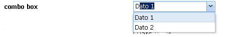

UI Widgets - scheda del widget [ ComboBox]
ComboBox]
In questa scheda è descritto il widget ComboBox, in termini di:
- riferimento alla documentazione di dettaglio dell'elemento del metamodello utilizzabile durante la modellazione
- uno o più snapshot che rappresentano graficamente il widget
- una descrizione del widget che ne descrive l'utilizzo e le possibili varianti
- elenco degli eventi gestibili (implicitamente o esplicitamente) relativamente al widget
Identificativo e riferimenti di dettaglio
La documentazione metamodeldoc di dettaglio del widget ComboBox è disponibile
qui.
Descrizione
E' il widget di selezione di uno (o più) dati a partire da una lista di dati precaricata.
Il widget completo prevede una label ed il campo di immissione associato.
La label può essere, in casi particolari, vuota.
Il ComboBox può essere utilizzato all'interno di:
- WidgetsPanel, con layout Verticale, Orizzontale, Griglia
Prevede due modalità di funzionamento, una standard ed una
ricca.
modalità standard
Il funzionamento di base del TextField prevede:
- la possibilità di specificare per ogni elemento della lista,
un valore visualizzato e la corrispondente chiave, utilizzata come valore
effettivamente seleizonato e utilizzabile dalla logica applicativa
- la scelta tra selezione singola o multipla
- la possibilità di effettuare, al momento del submit della form,
la validazione dell'input immesso a seconda del tipo di dato associato
al campo e di alcuni ulteriori specifiche
- la possibilità di essere disabilitato a comando
- la possibilità di essere reso invisibile a comando
- la possibilità di essere disabilitato/invisibile a fronte di regole associate al profilo dell'utente
collegato
- la visualizzazione di un marcatore di errore in prossimità della label, in caso di fallita
validazione
modalità ricca
La modalità ricca prevede di default i seguenti comportamenti aggiuntivi:
- funzione di autocomplete (restrizione dell'elenco di opzioni a fronte dell'immissione
progressiva dei caratteri iniziali della selezione stessa)
- tooltip al passaggio del cursore sulla label del widget
Immagini esemplificative

fig.1 - esempio di rendering grafico del widget
Eventi associati al widget
evento "event-value-changed"
E'possibile, a fronte della selezione da parte dell'utente di una delle
opzioni presenti nella lista, scatenare una logica applicativa e modificare di
conseguenza la schermata visualizzata. Esistono due modalità di esecuzione della logica
associata: standard e ricca.
modalità standard
Alla selezione di una opzione dalla lista viene eseguita la logica applicativa associata
e, al termine dell'esecuzione viene ricaricata l'intera schermata
oppure il flusso passa ad una schermata differente.
modalità ricca
Alla selezione di una opzione dalla lista viene eseguita la logica applicativa associata. Durante
l'esecuzione viene sospesa l'interazione utente e viene visualizzato un
indicatore di "operazione in corso".
Al termine dell'esecuzione i possibili effetti sono:
- il refresh dell'intera schermata corrente, con mantenimento della
posizione delle eventuali scrollbar
- il refresh di una porzione specifica di schermata
- il passaggio del flusso ad una schermata differente